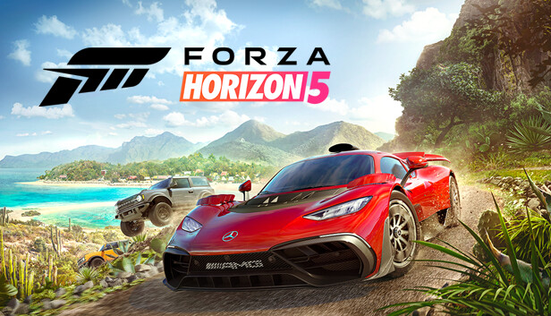
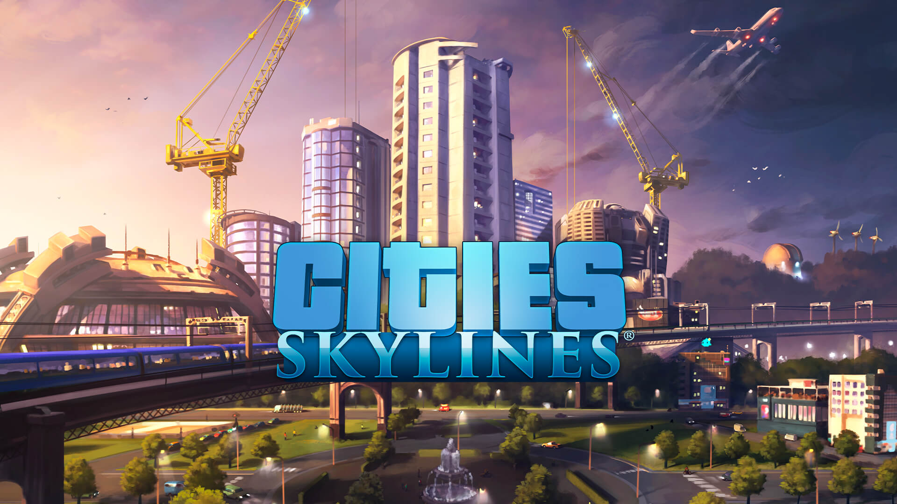

Subnaugtica is een prachtige onderwater avontuurlijke game. Je bent gestrand op een vreemd planeet met andere rare dieren. Je kan je basis bouwen en leven op het planeet of je kan het verhaal volgen en proberen te ontsnappen. ik beloof je dat verhaal is het waard het zal moeilijk zijn, Het zal veel tijd kosten, je zult boos worden en misschien bang als niet houdt van diep donker water. dus neem een duik en druk het plaatje
Dit zijn plaatjes van Soulsborn games het zij moeilijke boos makende games. Je wordt in een wereld gedropt en dan verteld versla deze mensen. Maar niet hoe dus moet je een eigen pad verzinnen. Je zal in deze games door allemaal baas gevechten heen gaan elke beter dan de andere. Deze games worden gezien als een van de beste games die bestaan. dus als je deze games al niet kende wat doe je hier druk op het plaatje en koop de games.

Froza een auto game je hebt een open world waar je allemaal verschillende stunts en races kan doen. Deze game is perfect als je naar achter leunt. En gewoon rijdt. Het auto verzamelen is ook leuk. Top scores hallen op verschillende stunts is heel verslavend en leuk. Dit is ook een heel goed kijken de game dit kan je wel het beste spelen op Xbox series X.cdruk op dit plaatje om te beginnen racen.
Cities skylines is een rustige stad bouwen game. Je zit naar achter je bouwt je stad je ziet het langzaam groeien als je het goed verzorgt. Je kan je stad pesten door tsunami’s te maken als je chaos wilt maar dat is niet nodig om blijdschap te hebben. Het voelt zo goed als je stad een populatie doel heeft gehaald dus ervaar dat en druk het plaatje en koop het spel.
Alien Islolation is een horror game dat is gefocust op een alien en jouw karakter die niet dood wil. Ik wil niet veel over het verhaal zeggen want je moet het ervaren. Maar wat ik wel kan zeggen is je gaat schreeuwen. Dus koop de game en begin het horror verhaal.

Titanfall2 is een game met een van de beste story Lines dat bestaat dat is al een reden dat je het moet kopen er is ook een multiplayer maar het is niet heel populair jammer genoeg. Maar het verhaal deze game heeft jou in een houd greep zo graag wil je het verhaal veder spellen. Het heeft mijn persoonlijke lievelingen karakter in Gaming BT. druk op het plaatje en ontmoet BT.